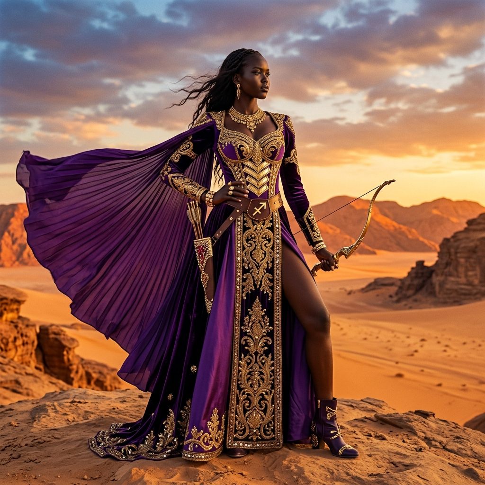

Astrology Fashion
Fire & Fabric: The Best Colors and Essentials
Discover why indigo and regal purple are the power colors of the season...
Read Entry
Curated fashion aesthetics for the free-spirited Sagittarius woman.
Explore the Journal
Discover why indigo and regal purple are the power colors of the season...
Read Entry
Master the art of packing for a journey across Milan and Marrakech...
Read Entry
Explore the innate trendsetting nature of the zodiac's most optimistic sign...
Read EntrySagittarius Muse is an exclusive digital space dedicated to the aesthetics of freedom, intellectual fashion, and the philosophy of conscious luxury. We believe that personal style is a visual extension of the soul.
Our mission is to curate the finest ideas for the modern Amazon who values quality, ethics, and impeccable beauty in every detail of her existence.